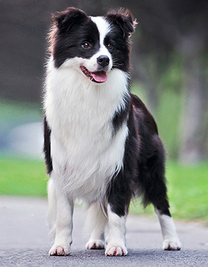

| 网站首页 | 狗狗介绍 | 狗狗照片 | 狗狗种类 | 狗狗食量 | 狗狗饲养 | 加入我们 | 登录/注册 |
 |
| 网站栏目 | 边境牧羊犬 | ||||||||
|
边境牧羊犬
边境牧羊犬天性聪颖、犬类智商排名第一。这种边境牧羊犬源自不列颠群岛本土的柯利牧羊犬，是十分常见的犬种。这种犬种的名称来自于他们可能的发源地，也就是苏格兰与英格兰的边界。“柯利牧羊犬”(Colley)或是“柯莱牧羊犬”(Collie)这两个名字首次在19世纪初为人所提及，然而“柯利牧羊犬”这个名词可以溯源至更早以前的苏格兰低地区方言。所有现存的纯种边境牧羊犬血统都可回溯至一只名叫老汉普(Old Hemp)的狗。老汉普生于1893年九月并死于1902年的五月，饲主为Adam Telfer，它身上有三种毛色，安静而强壮，善于管控羊群，因此许多牧羊人借用它来育种，而老汉普的特色也就逐渐成为边境牧羊犬这一支犬种的特色。1915年，英国的国际牧羊犬协会(International Sheep Dog Society, ISDS)干事詹姆斯?里德(James Reid)率先开始使用“边境牧羊犬”这个名称以和其他育犬协会中已由ISDS注册的柯利牧羊犬(即苏格兰牧羊犬，包含长毛(粗毛)牧羊犬(Rough Collie)及短毛(顺毛)牧羊犬(Smooth Collie)做出区别；它们虽然源自同一血统，但在1860年被引入展示场后就开始与其他品种交配而发展出了不同的标准外型。 飞盘狗 在西元前五世纪到西元前一世纪时，许多凯尔特人(Celtic)在欧洲四处迁移，其中有三支塞尔特人来到爱尔兰，他们带来了牲畜、看牧牲畜的狗还有猎狗。这几个种族使用一种叫做Q Gaelic的方言，而Collie的意思就是”有用处的”，因此对他们有用处的狗都被叫做Collie（柯利）。 爱尔兰的动物学家WLC Martin如此形容这种狗：有观察力、敏锐；毛发、长且经常是毛茸茸的；体态有型、强壮、外表漂亮、有点像狼似的。由此相信边境牧羊犬可能起源自Basque Celtics。 虽然英国的collie犬最早是在爱尔兰被发现的，不过它们却是在苏格兰被发展为牧羊犬，可以在苏格兰早期的历史中找到明显的答案；爱尔兰拥有青草茂盛的山坡地，因此爱尔兰人多畜养牛只与马匹；相较于荒凉不毛、气候恶劣的苏格兰，苏格兰人只好畜牧较易生存的绵羊。苏格兰最早期被放牧的羊及看管羊的狗是在苏格兰群岛被发现的，这些狗是源自于当初从爱尔兰迁移到苏格兰的教士所带去的狗，而且是在早期维京人入侵苏格兰之前就过去了的。 一直到山区峡谷内各部落间的对抗与斗争结束后苏格兰人都没有发展他们的天然资源，那样的环境特别是在高地区（The Highlands），人们都没有投入农业生产，唯有放牧绵羊对他们来说是较好的职业。而在崎岖的地理环境下人们只有仰赖狗来帮忙驱赶、集合、看牧牲畜了。并不知道高地牧羊边境牧羊犬犬和低地牧羊犬是来自何处、起源如何，不过却知道现代牧羊犬的起源，[4]它们拥有“眼神控制”（eye of control）的能力，这样的能力是由在苏格兰与英格兰的边界处放牧的牧羊人发展训练出来的，也因此有“眼神控制”能力的狗就叫做“边境牧羊犬”。 |
| Copyriight@2006-2016 QIANNIANZHILIANcom, ALL rights reserved. |